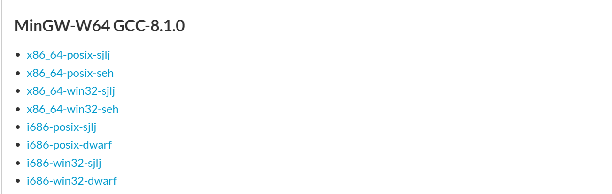
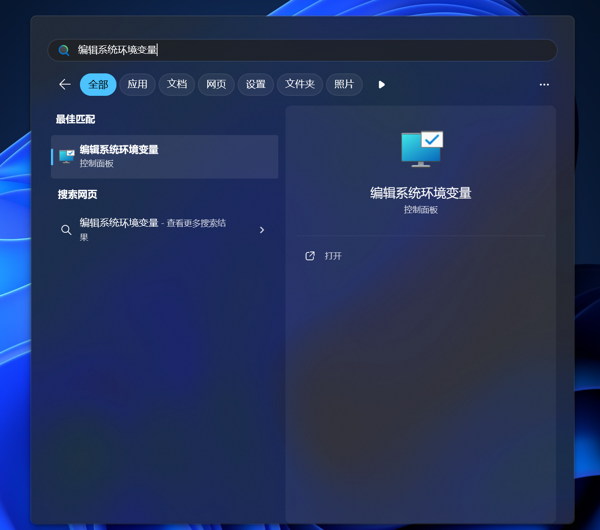
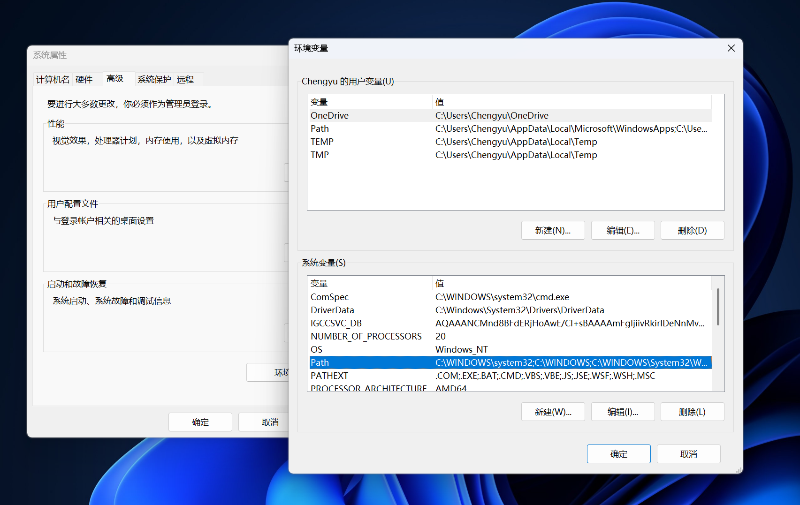
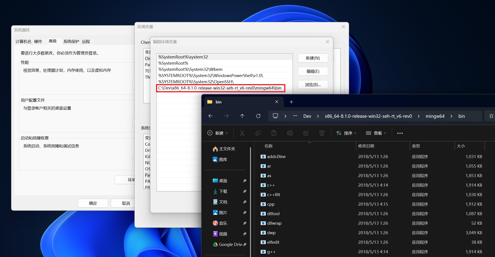

一 开始吧！
「 始めよければ半ばよし 」目录
C++ 简介
“ C++ 是一种被广泛使用的计算机程序设计语言。它是一种通用程序设计语言，支持多重编程范式，例如过程化程序设计、面向对象程序设计、泛型程序设计和函数式程序设计等。”
C++ 是一种十分先进的编程语言。在接下来的课程中，你应该会接触到 C++ 大多数有趣的内容（无趣的我都不会写）。而在你正式开始使用 C++ 之前，你需要知道是，C++
编写的程序需要编译器进行编译后运行。所以，我们今天的任务就是 —— 装好编译器与文本编辑器。祝你顺利！
MinGW-w64
这是 C++ 较为著名的编译器。为何我并不推荐使用 clang 和 MSVC 呢？因为我也不会用MinGW 的安装过程较为简便。
第一步：下载 MinGW-w64
Tips：如果你的电脑是 32 位系统，请自行搜索解决方案！打开 SourceForge 中的 MinGW-w64
图 1：注意不要选错
如图 1，请选择“SourceForge”网站而非首位的官网（官网看不懂）。进入后，请按照图 2、图 3 所示，选择 Files 并下滑找到“MinGW-W64 GCC-8.1.0”字样。
图 2：选择“Files” 
图 3：下滑至“MinGW-W64 GCC-8.1.0”
如果你的电脑比较新，选择“x86_64-win32-seh”，详细信息可以自行搜索。此处我将以“x86_64-win32-seh”为实例演示，其它版本大致相同。
Tips：SourceForge 的服务器速度并不是很快，仅仅比 GitHub 稍快，如果下载速度惨不忍睹或进度条肉眼不可见，可以尝试连接代理工具。图 4：肉眼不可见的速度
第二步：让系统“看见”
下载完后，你应该能见到一个不大的压缩包（实际大的一批）。将它解压，你将得到如图 5 所示的一个上百兆的神奇文件夹。
图 5：内部别有一番天地
接着，寻找一个你喜欢的文件夹，把它放进去。
图 6：喜欢的文件夹
图 6：喜欢的文件夹
然后，我们需要配置环境变量。环境变量是什么呢？大致地说就是一本字典，让系统可以查阅重要信息而不是各种信息的杂糅。添加环境变量很简单，接下来请跟着我操作。
- 如图 7，在开始菜单中搜索“编辑系统环境变量”（
偷点懒也不是不行），然后进入“系统属性”页面。

- 如图 8，点击“环境变量”按钮并选择“系统变量”中的 Path。 
- 如图 9，双击进入“系统环境变量”并添加刚才你存储 MinGW-w64 地址的 bin
地址（
有点拗口）。比如你刚才存储的地址为“D:\MinGW-w64”，则添加“D:\MinGW-w64\bin”。至此，系统环境变量添加完毕。

图 7：搜索“编辑系统环境变量”
图 8：系统环境变量
图 9：添加系统环境变量
如果你害怕遇到错误，可以打开 cmd，并尝试如下代码。有输出即表示成功（如图 10）。
g++ -v
图 10：应该出现的输出
VS Code
以下是关于它的介绍：
“ Visual Studio Code（简称 VS Code）是一款由微软开发且跨平台的免费源代码编辑器。该软件以扩展的方式支持语法高亮、代码自动补全（又称 IntelliSense）、代码重构功能，并且内置了命令行工具和 Git 版本控制系统。用户可以更改主题和键盘快捷方式实现个性化设置，也可以通过内置的扩展程序商店安装其他扩展以拓展软件功能。
“在 2019 年的 Stack Overflow 组织的开发者调查中，Visual Studio Code 被认为是最受开发者欢迎的开发环境。据调查，87317名受访者中有 50.7% 的受访者声称正在使用 Visual Studio Code。”
看过以上的介绍，你应该会明白为何我推荐使用的文本编辑器是 VS Code。另外，VS Code 十分灵活，如果你需要学习前端三剑客有关知识，也可以使用它（它也是我最推荐的前端工具）。接下来，我会带领你安装 VS Code。
Tips：接下来的步骤尽量使用科学上网环境，国内下载 VS Code 稳定版可能较慢，我将以其 Insiders 版本进行演示。第一步：下载 VS Code
由于 VS Code 稳定版国内也属于进度条不可见类型（貌似是绑在 GitHub 下的），但是，因为一些奇特的原因，Insiders 版本未被限速。所以，我们就可以卡个 bug运用这个特性，在
https://code.visualstudio.com/insiders/ 下载 VS Code。
图 11：VS Code Insiders 官网
这个网站的下载速度不能说很快，只能说是极速但是比 SourceForge 快一些，完成下载大约 2 分钟。如果你的电脑是微软老哥遗弃的系统或者 x86
的垃圾古董，可能需要下载 1.7 版本。具体链接请自行搜索。
在一点也不漫长的等待后，你一定会像图 12 一样绿色的一坨图标。这就是 VS Code 的图标。
图 12：左为 VS Code Insiders。图源：微软
{kind=link}
第二步：安装 VS Code
安装安装包（绕口令吧这是），然后你就可以欣赏一个美丽的 …… 纯英文界面。
此处，我就不得不提到一句美妙的名言了：
“当一种能够让程序员通过简单的英语来编程的编程语言诞生后，你会发现程序员们都不会说英语。”
。。。
好吧，所以安装中文插件也是程序员的必备技能。如图 13 所示，你就能安装中文插件啦 ~
图 13：安装中文插件
第三步：插件の世界
知周所众，VS Code 举世闻名的原因就是因为它遥遥领先的插件系统。一般来说，我们会选用带有蓝勾的开发者开发的，因为他（她/它）们都是经过微软官方认证的开发者，一般插件质量是有保证的。
现在，请按照安装中文语言插件的方法依次安装图 14 中的几个 C++ 插件。
图 14：一些必须安装的插件
VS Code 的主题我比较推荐 GitHub Theme 套装。总体使用体验优。值得一试。

图 15：GitHub Theme。图源：微软
{kind=link}
初识 C++
这样，我们就完成了 VS Code 的安装。不过，今天的任务还没结束。还记得概览中的代码吗？把它粘贴到 VS Code 中吧！如果你忘记了，可以从以下复制哦 ~ 👇
#include <iostream>
int main()
{
std::cout << "Hello World!";
return 0;
}
将此保存到一个随便的地方（建议在 MinGW-w64 附近），然后如图 16 所示，先点击三角形“运行”按钮，再选择第二项：g++（此处需要注意不要选错成 gcc）。然后，你的第一个程序就会开始运转咯 ~
图 16：注意选择 g++ 而非 gcc
运行并看到一串调试内容后，如果你进入“终端”标签页，就能看到一串复杂的指令和输出（你也可以用下方的代码来自行生成）。其中“Hello World”就是我们期望得到的输出啦 ~
PS D:\> g++ 文件名.cpp -o 文件名.exe
PS D:\> .\文件名.exe
Hello World!
代码解释
首先，第一行代码“#include <iostream>”可以分解为 2 部分：#include 和 <iostream>。如果你的英文还好 ……
至少不像那句名言所述，那你应该知道，include
意为“包含”，<iostream> 不难可知意思类似一本名叫《输入输出流》的书。事实也确实如此。尖括号中内容在编程中的学名为头文件。所以，通俗的说，这句话的意思就类似给了 g++ 一本专业字典，然后任其查阅。
然后，我们看之后的几行。“int main()”的意思也很好理解 —— 定义主函数。C++ 的所有“动作”都必须写在函数中，而默认运行的函数就称为主函数。所以，我们只需要观察内部的内容就行。
std::cout << "Hello World!" 是通过标准命名空间（standard namespace）调用 iostream
的类以及重载函数 << 实现的。关于什么是重载函数我们以后再聊。
最后，return 0，意为返回值 0。由于我们的函数设置为整形（int），所以我们需要返回整型值。一般来说，返回值为 0
才表示主函数顺利结束（其它函数可以拥有其它返回值）。
经过我今天比较仓促的讲解，希望你对 C++ 已经有了比较初步的了解。加油！希望你能继续学下去哦 ~